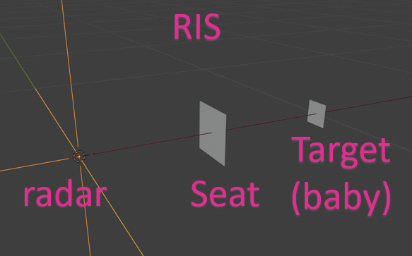

Enter parameters below, then click Run Simulation to compute
the radar beampatterns with and without RIS and visualize the results.
2D Beampattern (x-y) with RIS
2D Beampattern (x-y) without RIS
2D Beampattern (y-z) with RIS
2D Beampattern (y-z) without RIS
3D Geometry (Radar, Target, RIS)
RIS Element Positions (x-y)
RIS Element Positions (x-z)
RIS Element Positions (y-z)